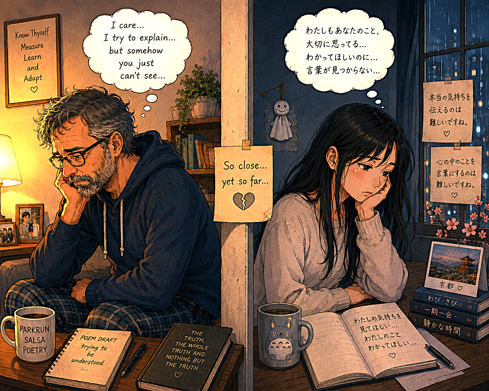

Dizzy and so trippy - being in a spin - From ?
Too much fizzy - when you paint the town red,
with your best buddy or buddies - we will never know.
'Cause you do not talk anymore!
Getting up too fast,
from sitting in a low chair,
after watchin' the Telly all night,
as blood drains quickly away from your brain;
starved of oxygen, as vision is blinded by a black
and white sea of stars;
losing your footing,
knocking off any sense of balance.
Being told a Lie!
Depending on whom,
of course:
the depth, how entwined in the other's skin you are,
the deeper you are inside the other - the greater the emotional pain.
The deeper you are inside the other,
the more unsteady you feel;
the harder the fall.
Emotional pain is the hardest pain to suffer.
The mind and body being slowly crushed by overbearing bubbles of thinking and feeling,
living rent free in the mind;
sending small tiny spears to puncture,
destroying your once loving heart,
over this lifetime.
Second by second,
minute by minute,
hour by hour,
day by day,
month by month:
years go by,
as life trickles,
no longer tickles away.
Best find your purpose,
voice for your life's fulfillment,
and the ultimate satisfaction.
White lies: smooth rough edges,
saving a rocky relationship.
Black lies are dangerous,
their intent is to exploit,
deceive and control you.
But what of other lies?
Do they have colours too?
If these lies are in rainbow colours,
what colour are yours: Red, Orange, Yellow, Green, Blue, Indigo, Violet ?
For we all lie.
The worst lies for you
and I are rarely spoken aloud.
They are whispered by our own internal voice,
repeated until they become the truth we choose to believe-in.
No longer attached to any objective reality.
My mind is still dizzy.
Tumbling, fumbling, to unlock the secret key to you.
"Why do that ?",
you may ask,
if at all you care.
Do you care ?
The White Rabbit brings joy,
love in Alice's adventures:
"Alice's Adventures in Wonderland"
and other buried treasures.
Neo followed the White Rabbit to a loud rock party
and met the love of his life - Trinity.
Neither realised that "True Love" would be their untold story.
Only one knew that the life Neo was living in: "The Matrix",
to be the boldest lie of all.
In modern life,
I find that social intercourse is littered with lies and half truths.
Many talk with a passion of conviction,
sooner or later we discover that some people do not mean what they say
and say only what they think you want to hear.
Heavens above, and Hells below - between sits the earth.
One day we depart this mortal coil,
maybe,
to these mythical places,
maybe to nowhere at all,
as our bodies return to the cosmic dust.
Why do I care about you and us ?
In a moment I felt the spark of love.
I felt that you did too!
Now I'd love to know if that is true.
Either way I deserve to know.
Or will you take the easy road
and find a colourful lie out of the trap of this Truth.
Maybe the Truth is this: 'you feel nothing at all … at ALL!'